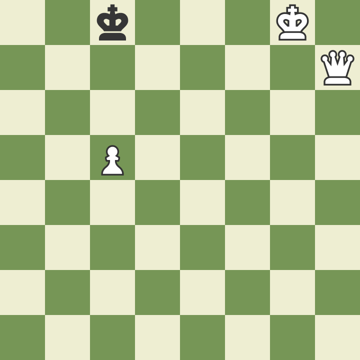
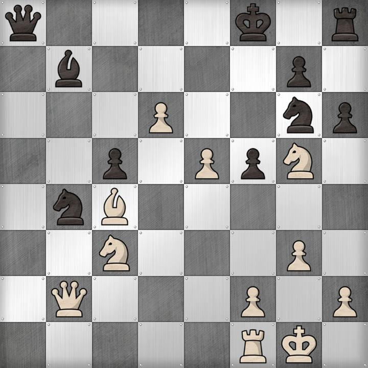
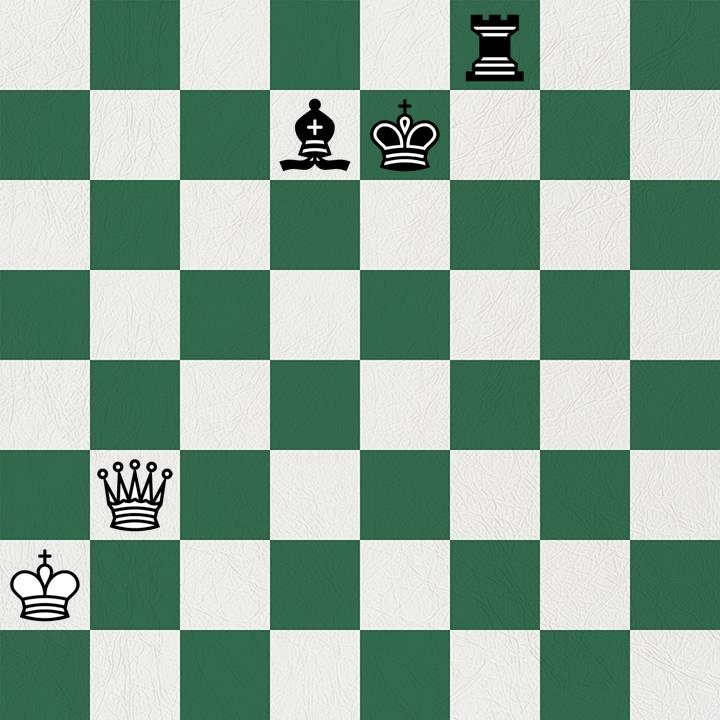
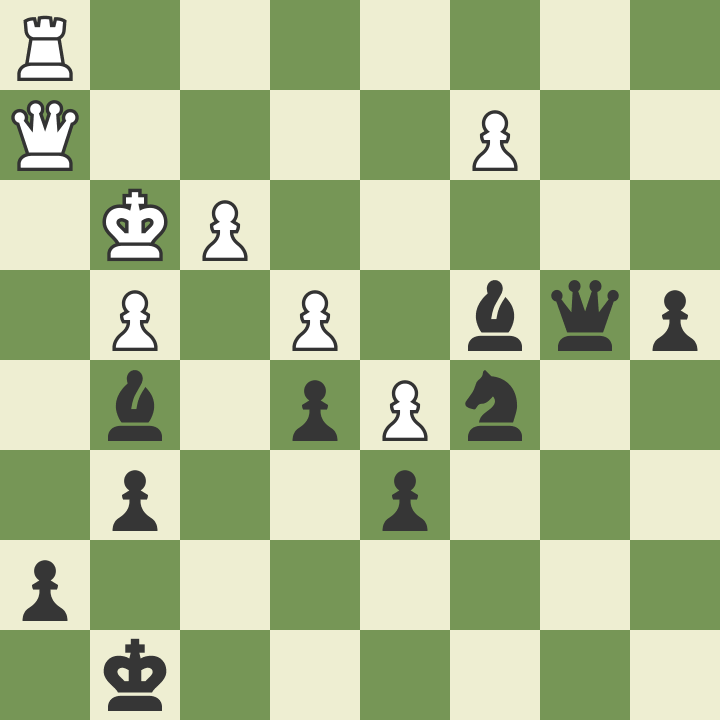
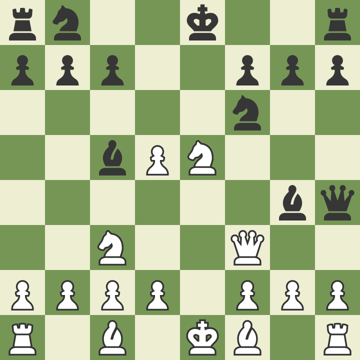
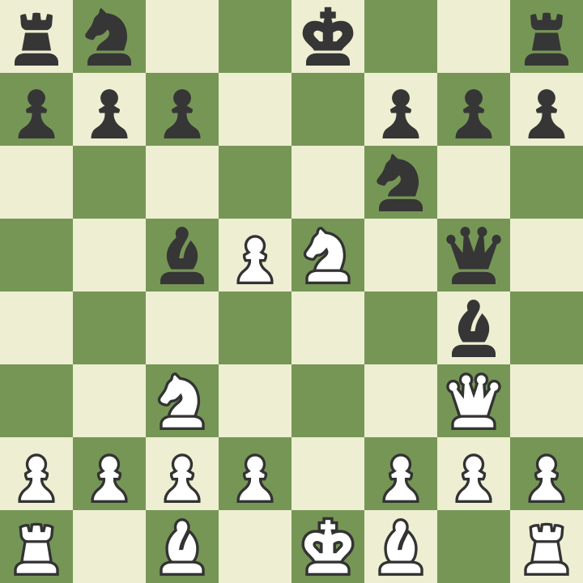

"If you wish to succeed, you must brave the risk of failure." - Garry Kasparov
Learn chess openings, endgames, and more!
This video is about how to play the game of chess, with all the rules and other important things to remember. If you have never played chess, you should watch this video. If you have not played chess for a long time, reviewing the rules (by watching the video) will probably help as well.
"By the time a player becomes a Grandmaster, almost all of his training time is dedicated to work on this first phase. The opening is the only phase that holds out the potential for true creativity and doing something entirely new." - Garry Kasparov
Content (videos) will come soon.
Chess Endgames
"When I was preparing for one term’s work in the Botvinnik school I had to spend a lot of time on king and pawn endings. So when I came to a tricky position in my own games I knew the winning method." - Garry Kasparov
In this video, you will learn a basic chess checkmate: King and Queen vs King.
Here are some chess endgame scenarios where you need to determine whether this position is a draw or a win for either side. These will also help with your chess visualisation and algebraic notation skills, as the solutions are written in algebraic notation.
In the first scenario, the black pawn is one square away from promotion, but it is white to move. Is this a draw? If not, who will win?
SOLUTION: After Rc8, Rc7, or Rc6, it is lost for black. This is because if the black king tries to protect the pawn on b2 by playing Ka3, white will play Ra8+, Ra7+, or Ra6+, depending on their last move. After this, the black king will need to move and the black pawn will be captured. If white plays Rc6 and black plays Kb5, attacking the rook, the rook should move to c8 or c3. If white moves the rook to c8, there is always Kxb2. This will always be possible because the black king can never protect the pawn because of his last move. If white plays Rc3 instead of Rc8, white will simply pick up the black pawn and win the game. White cannot play Rc3 immediately, because after b1=Q+, it is a draw. If the new queen is captured, the rook will be captured.
In the second scenario (where both kings have moved to the other side of the board), the black pawn is two squares away from promotion, and it is black to move. Can black somehow force a draw?
SOLUTION: In the position, black can force a draw by pushing their pawn to h2. This leaves black with no more legal moves, so if the rook stays in the G-file, it will be stalemate (which is a draw). If the rook moves to any other file, say the E-file, the black king will simply move out of the way, and the pawn will promote, also leading to a draw. Their only other legal move, Kh2, also leads to a draw, since the white king is not active at all.

White is clearly winning in the final position, but how many moves are there until mate? White to move and win.
SOLUTION: In this final scenario, we see that white cannot immediately checkmate the black king, but there is a way to checkmate the black king in two moves. White will do this by playing c6. After this, the black king will move to either d8 or b8. After Kd8, there is Qd7#. If Kb8 is played, there is Qb7#.
FOR BEGINNERS: If you want to learn more about basic endgames and checkmates, I highly recommend reading Bobby Fischer Teaches Chess, by Bobby Fischer. Another book highly recommended is Silman's Complete Endgame Course, by Jeremy Silman.
Tactical Puzzles
"My great teacher Mikhail Botvinnik used to say that the difference between players, when you look at weak players, stronger players, strong players, top players, world champions, at the end of the day it’s about the number of positions – or you may say number of patterns – he or she can recognize." - Garry Kasparov
"Tactics is knowing what to do when there is something to do. Strategy is knowing what to do when there is nothing to do." - Garry Kasparov
In this puzzle section, you can use tactics to find moves that will win material and win you the game.
POSITION 1:

How can you immediately punish black's last move, h6 and win material?
SOLUTION: Ne6+. After this move, black's king must move, and has no good squares. If Ke8 is played, there is Nc7+, which will win the black queen on a8. Instead, after Ne6+, if the King goes to g8 or f7, there is a discovered attack after Nc7+ (the check comes from the Bishop), and the queen will be picked up. This will be an easily winning endgame for white.
POSITION 2:

In this situation, white is lost. What move should black play to win?
SOLUTION: Using the concept of a pin, black can play Be6. After this, the white Queen will be lost, and black will checkmate with the Rook.
POSITION 3:

This is a position from one of my recent games. What forcing move should I play, as black, to win material and win the game?
SOLUTION: The move is Bf4+, which gives check to the White King. After the King moves, the Black Bishop will capture the opponent's Queen. After I played this move, my opponent resigned.
POSITION 4:

Here is a position from another game that I played recently. My opponent, playing as Black, just played Bg4, a move that attacks my Queen. Should I play Pawn to g3, counterattacking their Queen?
SOLUTION: No. If you work it out, you will see that after they take your Queen and you take their Queen, they will simply take your Rook.
POSITION 5:

Just one move later in the same game, my opponent blundered. How can white win material?
SOLUTION: The move d4 attacks the Black Bishop, but also attacks the Queen. This is because my dark-squared Bishop's diagonal has been opened. My opponent ended up moving his Queen out of danger and winning a Pawn, but I won the Bishop. This tactic is called a discovered attack.